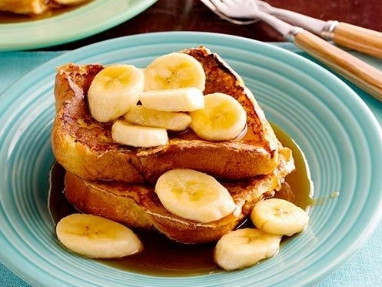

Ingredients
- For the French Toast Batter
- 3 eggs
- 1/3 cup milk, preferably whole
- 1/3 cup double cream
- 1/4 teaspoon pure vanilla extract
- 1/4 teaspoon orange-flavored liqueur (recommended: Grand Marnier)
- 1/8 teaspoon sea salt
- 1/8 teaspoon ground cinnamon
- For the Caramel Sauce
- 1 cup unsalted butter
- 2 cups packed brown sugar
- 1/4 teaspoon ground cinnamon
- 1/2 cup orange juice
- 1/4 cup dark rum
- 1 tablespoon creme de banana liqueur, optional
- 3 bananas, peeled and sliced
- 6 thick bread slices, preferably French toast bread (brioche) or Texas toast
Method of Cooking
- Batter: In a large bowl, combine all of the ingredients until a smooth batter is formed.
- Sauce: In a saucepan over medium-high heat, melt the butter, then add the brown sugar. Stir continuously until the sugar has dissolved. Add the cinnamon and orange juice and bring to a simmer. Remove the pan from the heat, pour in the rum and creme de banana, if using, then return the pan to the heat. Brush down the sides of the pan with water using a pastry brush. Remove from heat.
- In a small saute pan, add 1/4 cup of the caramel sauce and the bananas. Saute over high heat until just warmed through. Keep warm.
- Toast: Preheat a griddle or a nonstick pan over high heat. Dip the bread slices into the batter, then put them on the griddle, turning over after 2 minutes. To each serving plate, add 1/4 cup of the caramel sauce and top with the French toast. Spoon the bananas, over the toast and drizzle with some of the caramel sauce.